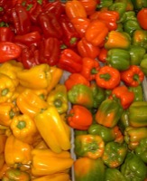

パプリカの生産量 都道府県ランキング
1位から3位までと、とれた量
パプリカが日本でいちばん多くとれるのは宮城県です。1,840 tで、全国（7,820 t）の24%を占めます。

| 順位 | 都道府県 | 収穫量 | 全国に占める割合 |
|---|---|---|---|
| 1位 | 宮城県 | 1,840 t | 24% |
| 2位 | 茨城県 | 1,070 t | 14% |
| 3位 | 大分県 | 757 t | 9.7% |
この数字について
- 分類：ナス科
- 全国の収穫量：7,820 t
- この数字が表すもの：収穫量（畑や田でとれた重さ）
- 調査：地域特産野菜生産状況調査 令和6年産
- 35県分を調査（調査していない県は順位に入りません）
パプリカの生産量について、よくある質問
- パプリカの生産量が日本一の都道府県はどこですか？
- 宮城県です。地域特産野菜生産状況調査（令和6年産）で1,840 tでした。
- パプリカの生産量ランキング2位・3位はどこですか？
- 2位は茨城県（1,070 t）、3位は大分県（757 t）です。
- パプリカの全国の生産量はどれくらいですか？
- 7,820 t（令和6年産）です。